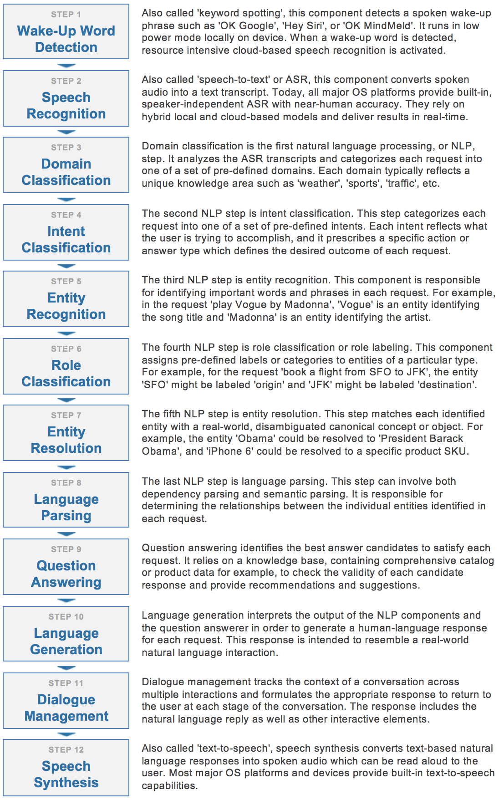
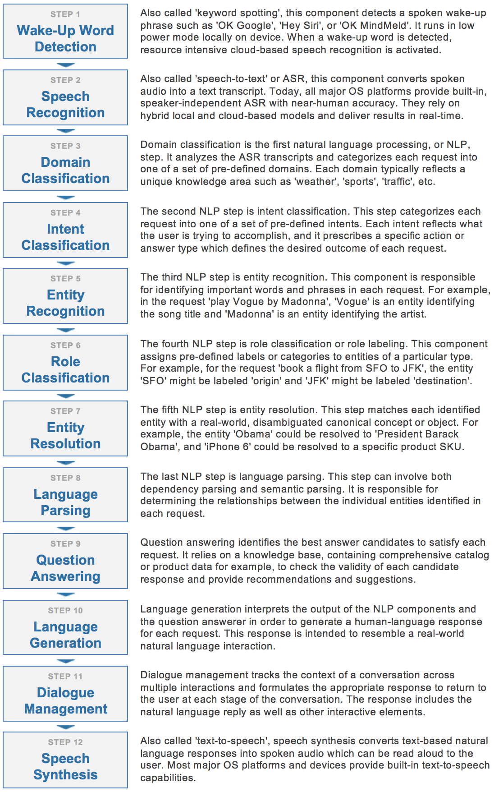

Hundreds of millions of people around the world use conversational assistants every single day. They invoke these assistants on connected devices, smartphones, and laptops, in cars, or within a wide variety of applications. Some of these conversational assistants are voice-enabled and can listen to and respond in spoken language. Others are text-based and can read and respond to typed messages and requests. No matter the medium, application or device, all conversational interfaces rely on a set of core underlying technologies in order to understand natural language input and engage in a human-like conversational interaction. The diagram below illustrates the key technology steps which underlie modern conversational applications.
Which of these steps are required depends on your application. For example, when you build a chat assistant for a messaging platform such as Facebook Messenger, the input and output are text rather than voice. In this case, Steps 1, 2, and 12 are not required. To build an application which only performs simple actions and does not answer questions, then Step 9 may not be necessary. If you wish to build a voice assistant that demonstrates the same level of accuracy and versatility as products like Siri, Alexa and Cortana, that is likely to require all 12 of the steps identified above.
 



{
"category": "Makimono-Sushi Rolls (6 Pcs)",
"description": "Makimono-Sushi Rolls (6 Pcs)\nDeep-fried shrimp, avocado, cucumber",
"price": 6.5,
"restaurant_id": "B01N97KQNJ",
"img_url": null,
"id": "B01N0KXELH",
"name": "Shrimp Tempura Roll"
},
{
"category": "Special Rolls",
"description": "California roll topped w/ cooked salmon, mayo and masago",
"price": 9.95,
"restaurant_id": "B01N97KQNJ",
"img_url": null,
"id": "B01MYTS7W4",
"name": "Pink Salmon Roll"
}